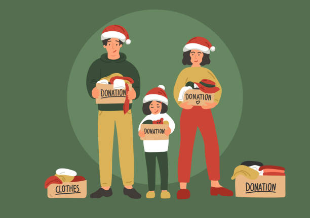

WEBSITE BY
GROUP 4A OF
9PIGNATELLI
Background...
“Pamaskong Paghahandog na Pag-asa” is the project that we, as a group, have worked hand in hand to develop. It is a charitable Christmas themed donation drive in which we hope to collect enough donations to fill the hearts of the SAKADAB community with festive joy. Financial difficulties have existed for quite some time now within the community, and we hope to reduce, if not stop the problem to put the members of the community at ease.
Significance/Problem Identification...
“We as a group believe in the significance of this project to the members of SAKADAB as we have taken into note their difficulty in maintaining financial stability and proper resource management for the families within their institution. This project aims to positively impact their current source of resources/revenue and steer it to being more sufficient for their members. The lack of certain privileges the community faces due to their physical conditions that hinders them from applying for better jobs acts as a driving force in why we are motivated for this project to succeed and see prosperity not only for them but us as students of Ateneo as well."
Proposed Intervention of the Project Proposal...
“The main goal of “Pamaskong Paghahandog na Pag-asa” is to help lead the SAKADAB community into developing a fruitful future for not only their members, but their institution as a whole. We plan on promoting our drive through publication material online as well as flyers within the school. We also plan on setting up a booth within the campus for willing participants to drop off their donations to which we will do frequent supply checks before finally delivering the donations to the institution. With our collected donations, we hope that this would help support the members to improve their financial situation and their sources of income to ensure that any related problems they encounter in the future are sufficiently handled.
The specific objectives for this project include…
To establish donations of food parcels such as rice and canned goods and similar non-perishable/long-life items to support the institution's food bank.
To promote proper sanitation such as providing soaps, toothpaste, hairbrushes, all-purpose cleaners, and etc.
To engage support on medical supplies such as PPE equipment like rubber gloves, face masks and/or shields and disinfectants.
To uphold a storage box with the given donations such as cloth, needles , scissors and sewing materials to prevent the lack of materials upon creating institutional products.
To improve the current sources of income the community currently relies on such as better resources for the making and selling of their handicraft businesses.
Tahir Lidasan, also known as Jack, is the main designer of this webpage as well as the overall CSS of the website along with the help of his group mates. He finds passion within expressing his creativity through his designs whether it be through his drawings , writings , or as seen here, his web developing. In acting as an advocate for SAKADAB alongside his group mates, he wishes to support them using his designing skills in developing a sufficient website for the institution’s benefit. Other activities he frequents include, browsing endlessly through Pinterest for ideas , nonstop listening to Lana Del Rey , online shopping even if his paypal is empty , and binge watching horror movies. With this in mind, this paints a clear picture of the kind of person Jack is and if you think he’s a loser, you're probably right.